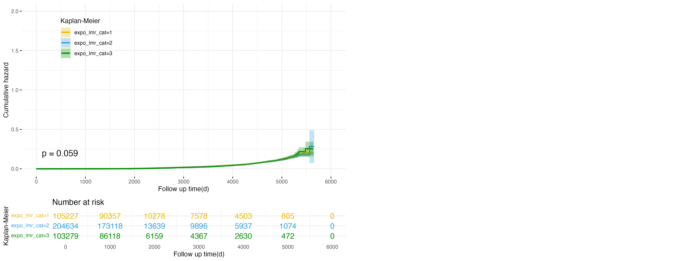
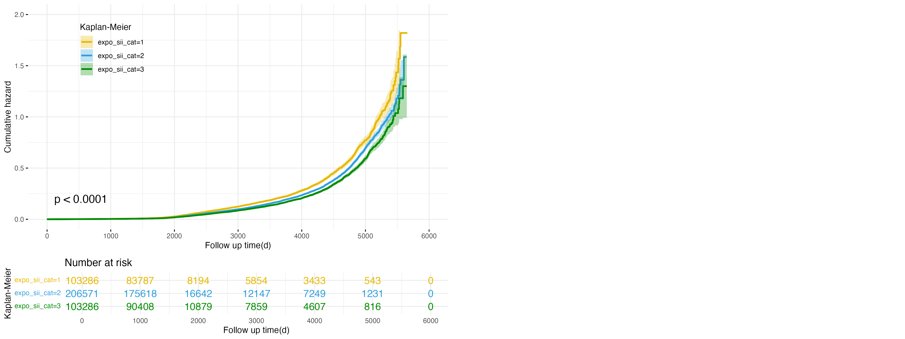

Survival Analysis
View Full Survival Analysis Steps on GitHub
Methodology
Cox proportional hazards models will be employed to investigate the association between exposure categories and survival outcomes. In this study, we will conduct survival analysis to evaluate the relationships between baseline inflammatory and metabolic exposure categories and the risks of developing non-alcoholic fatty liver disease (NAFLD) and cirrhosis. Survival analysis is a statistical approach designed to analyze time-to-event data, where the survival time \(T\) (time until the occurrence of the event of interest) and the censoring time \(C\) (time at which an observation is no longer tracked) are observed. The observed survival time, denoted as:
\[Y = min(T, C)\]
The censoring indicator \(\delta\) is defined as: \[ \delta = \begin{cases} 1 & \text{if } T \leq C \\ 0 & \text{if } T > C \end{cases} \] Here, \(\delta = 1\) indicates the event was observed, and \(\delta = 0\) signifies that censoring occurred.
By modeling survival times and event occurrences, we aim to quantify the impact of different exposure categories on the hazard of developing NAFLD and cirrhosis, adjusting for relevant covariates.
General Form of the Cox Proportional Hazards Model
We applied the Cox proportional hazards model to evaluate how various covariates influence the hazard rate \(h(t)\), which represents the instantaneous risk of the event occurring at time \(t\). The hazard function is defined as:
\[h(t) = h_0(t) \exp(x_1\beta_1 + x_2\beta_2 + \dots + x_k\beta_k)\]
Where:
\(h(t)\): Hazard function for time t,
\(h_0(t)\): Baseline hazard function,
\(x_i\): Covariates (e.g., age, sex, inflammatory markers, socioeconomic factors),
\(\beta_i\): Regression coefficients for covariates.
Baseline Characteristics Table
The baseline characteristics are stratified by each exposure category to identify differences in fundamental features across exposure groups and to provide a reference for constructing the Cox proportional hazards model (see Appendix for more detailed tables and explanations).
Baseline_expo_lmr_cat_results <- read_csv("./csv/Baseline_expo_lmr_cat.csv")
Baseline_expo_lmr_cat_cleaned <- Baseline_expo_lmr_cat_results %>%
select(-test) %>%
rename(
` ` = ...1,
Level1 = `1`,
Level2 = `2`,
Level3 = `3`
)
knitr::kable(
Baseline_expo_lmr_cat_cleaned,
digits = 2,
caption = "Baseline Characteristics by LMR Exposure Categories",
align = "c"
) %>%
kable_styling(full_width = FALSE, position = "center")| Overall | Level1 | Level2 | Level3 | p | |
|---|---|---|---|---|---|
| n | 413146 | 105227 | 204634 | 103279 | NA |
| sex = 2 (%) | 190849 (46.2) | 69149 (65.7) | 93068 (45.5) | 28629 (27.7) | <0.001 |
| age (mean (SD)) | 56.54 (8.09) | 57.70 (8.07) | 56.32 (8.10) | 55.79 (7.96) | <0.001 |
| income (%) | NA | NA | NA | NA | <0.001 |
| 1 | 40844 (9.9) | 9912 (9.4) | 20134 (9.9) | 10798 (10.5) | NA |
| 2 | 17370 (4.2) | 3874 (3.7) | 8290 (4.1) | 5206 (5.1) | NA |
| 3 | 79972 (19.4) | 21680 (20.7) | 37894 (18.6) | 20398 (19.8) | NA |
| 4 | 89874 (21.8) | 23863 (22.8) | 44107 (21.6) | 21902 (21.3) | NA |
| 5 | 92455 (22.4) | 23555 (22.5) | 46634 (22.8) | 22263 (21.6) | NA |
| 6 | 72283 (17.5) | 17494 (16.7) | 37205 (18.2) | 17583 (17.1) | NA |
| 7 | 19249 (4.7) | 4513 (4.3) | 9872 (4.8) | 4864 (4.7) | NA |
| townsend (mean (SD)) | -1.33 (3.08) | -1.39 (3.04) | -1.39 (3.04) | -1.14 (3.18) | <0.001 |
| total_met (mean (SD)) | 1619.08 (2015.70) | 1645.29 (2084.82) | 1625.33 (2008.34) | 1578.85 (1955.34) | <0.001 |
| diet_quality (mean (SD)) | 3.29 (1.57) | 3.12 (1.57) | 3.31 (1.57) | 3.42 (1.56) | <0.001 |
| sleep_hour (mean (SD)) | 7.15 (1.10) | 7.17 (1.12) | 7.15 (1.09) | 7.14 (1.13) | <0.001 |
| smoke_cat (%) | NA | NA | NA | NA | <0.001 |
| 1 | 32255 (7.8) | 6743 (6.4) | 15030 (7.3) | 10481 (10.1) | NA |
| 2 | 11334 (2.7) | 2843 (2.7) | 5572 (2.7) | 2919 (2.8) | NA |
| 3 | 96062 (23.3) | 27859 (26.5) | 47078 (23.0) | 21122 (20.5) | NA |
| 4 | 47431 (11.5) | 12141 (11.5) | 23827 (11.6) | 11463 (11.1) | NA |
| 5 | 60211 (14.6) | 15267 (14.5) | 30436 (14.9) | 14507 (14.0) | NA |
| 6 | 165853 (40.1) | 40374 (38.4) | 82691 (40.4) | 42787 (41.4) | NA |
| total_alcohol (mean (SD)) | 12.55 (15.17) | 15.16 (17.37) | 12.50 (14.77) | 9.98 (12.92) | <0.001 |
| non_hdl (mean (SD)) | 359.49 (78.74) | 345.15 (77.61) | 361.10 (77.88) | 371.09 (79.37) | <0.001 |
| tg (mean (SD)) | 92.17 (22.17) | 92.24 (22.59) | 91.90 (21.60) | 92.66 (22.85) | <0.001 |
| bp_cat (mean (SD)) | 49.88 (28.78) | 47.57 (28.26) | 50.05 (28.71) | 51.91 (29.25) | <0.001 |
This table provides the baseline characteristics of participants categorized by Lymphocyte-to-Monocyte Ratio (LMR) levels (Level 1, Level 2, Level 3). It includes demographic (e.g., age, sex), socioeconomic (e.g., income, Townsend index), lifestyle (e.g., smoking, alcohol intake), and clinical markers (e.g., triglycerides, diet quality), highlighting significant differences across categories with p-values for most variables. These differences emphasize potential confounding variables that need adjustment in subsequent statistical models, such as Cox proportional hazards analysis.
Cox Proportional Hazards Models
Model 1
\[ h(t) = h_0(t) \exp\left( \beta_{\text{expo}} \times x_{expo} + \beta_{\text{age}} \times x_{age} + \beta_{\text{sex}} \times x_{sex} \right) \]
Model 2
\[ \begin{aligned} h(t) = h_0(t) \exp\Big( & \beta_{\text{expo}} \times x_{expo} + \beta_{\text{age}} \times x_{age} + \beta_{\text{sex}} \times x_{sex} + \beta_{\text{income}} \times x_{income} \\ & + \beta_{\text{townsend}} \times x_{townsend} + \beta_{\text{total_met}} \times x_{\text{total_met}} + \beta_{\text{diet_quality}} \times x_{\text{diet_quality}} \\ & + \beta_{\text{sleep_hour}} \times x_{\text{sleep_hour}} + \beta_{\text{smoke_cat}} \times x_{\text{smoke_cat}} + \beta_{\text{total_alcohol}} \times x_{\text{total_alcohol}} \\ & + \beta_{\text{no_hdl}} \times x_{\text{no_hdl}} + \beta_{\text{tg}} \times x_{\text{tg}} + \beta_{\text{bp_cat}} \times x_{\text{bp_cat}} \Big) \end{aligned} \]
After fitting the Cox proportional hazards models, hazard ratios (HRs) will be calculated for each exposure category, with the lowest exposure category serving as the reference. Statistical significance will be assessed using p-values, and dose-response relationships will be evaluated through p-for-trend tests. Results will be reported with 95% confidence intervals (CIs) to convey precision. Survival durations will be computed based on either censored times or event times, with imputation applied where necessary to ensure complete datasets for analysis.
Cumulative Hazard Plots
Cumulative Hazard Plot for expo_lmr Categories in NAFLD Outcome

The cumulative hazard plot shows the association between lymphocyte-to-monocyte ratio (LMR) exposure categories and the risk of developing non-alcoholic fatty liver disease (NAFLD) over time. The three exposure categories (level 1, level 2, and level 3) display distinct cumulative hazard trends, with the high exposure group (level 3, yellow line) showing the steepest increase, indicating the highest risk of NAFLD. The low exposure group (level 1, green line) has the slowest cumulative hazard growth, suggesting the lowest risk, while the intermediate group (level 2, blue line) lies between the two. The separation of curves is statistically significant (p < 0.0001), demonstrating a strong dose-response relationship, where higher LMR exposure corresponds to greater NAFLD risk. These findings highlight the role of inflammation, as reflected by LMR, in driving the development of NAFLD.
Cumulative Hazard Plot for expo_lmr Categories in Cirrhosis Outcome

The cumulative hazard plot depicts the relationship between lymphocyte-to-monocyte ratio (LMR) exposure categories and the risk of developing cirrhosis over time. The three exposure categories (level 1, level 2, and level 3) show minimal separation in cumulative hazard curves throughout most of the follow-up period, with a slight divergence occurring after approximately 5,000 days. The high exposure group (level 3, yellow line) exhibits a marginally higher cumulative hazard compared to the intermediate (level 2, blue line) and low exposure groups (level 1, green line). However, the overall difference among the exposure groups is not statistically significant (p = 0.059), suggesting limited evidence to support an association between LMR exposure categories and cirrhosis risk within the observed follow-up period.
Cumulative Hazard Plot for SII Exposure in NAFLD Outcome

The cumulative hazard plot illustrates the relationship between systemic immune-inflammation index (SII) exposure categories and the risk of developing non-alcoholic fatty liver disease (NAFLD) over time. The three exposure categories (level 1, level 2, and level 3) display distinct trends, with the high exposure group (level 3, yellow line) showing the steepest cumulative hazard increase, indicating the highest risk of NAFLD. The low exposure group (level 1, green line) exhibits the slowest cumulative hazard growth, reflecting the lowest risk, while the intermediate group (level 2, blue line) lies between the two. The differences in cumulative hazard among the groups are statistically significant (p < 0.0001), highlighting a clear dose-response relationship. These findings underscore the importance of systemic inflammation, as captured by SII, as a significant risk factor for NAFLD development.
Cumulative Hazard Plot for SII Exposure in Cirrhosis Outcome

The cumulative hazard plot shows the relationship between systemic immune-inflammation index (SII) exposure categories and the risk of developing cirrhosis over time. The three exposure categories (level 1, level 2, and level 3) exhibit increasing cumulative hazard trends, with the high exposure group (level 3, yellow line) showing the steepest increase in cumulative hazard, indicating the highest risk of cirrhosis. The low exposure group (level 1, green line) has the slowest cumulative hazard growth, suggesting the lowest risk, while the intermediate group (level 2, blue line) falls between the two. The differences among the exposure groups are statistically significant (p < 0.0001), demonstrating a strong association between higher SII levels and increased risk of cirrhosis. These findings highlight systemic inflammation, as measured by SII, as an important risk factor for cirrhosis.
Cumulative Hazard Plot for SII Exposure in NAFLD Outcome

The cumulative hazard plot illustrates the association between systemic immune-inflammation index (SII) exposure categories and the risk of developing non-alcoholic fatty liver disease (NAFLD) over time. The three exposure categories (level 1, level 2, and level 3) show clear separation in cumulative hazard trends, with the high exposure group (level 3, yellow line) exhibiting the steepest increase in cumulative hazard, indicating the highest risk of NAFLD. The low exposure group (level 1, green line) demonstrates the slowest cumulative hazard growth, reflecting the lowest risk, while the intermediate group (level 2, blue line) lies between the two. The differences among the exposure groups are statistically significant (p < 0.0001), highlighting a strong relationship between higher SII levels and increased risk of NAFLD. These findings emphasize the critical role of systemic inflammation, as measured by SII, in influencing NAFLD development.
Cumulative Hazard Plot for NPAR Exposure in Cirrhosis Outcome

The cumulative hazard plot shows the relationship between neutrophil-to-albumin ratio (NPAR) exposure categories and the risk of developing cirrhosis over time. The three exposure categories (level 1, level 2, and level 3) demonstrate increasing cumulative hazard trends, with the high exposure group (level 3, yellow line) exhibiting the steepest cumulative hazard increase, indicating the highest risk of cirrhosis. The low exposure group (level 1, green line) shows the slowest cumulative hazard growth, reflecting the lowest risk, while the intermediate group (level 2, blue line) lies between the two. The differences among the groups are statistically significant (p < 0.0001), suggesting a strong association between higher NPAR levels and an increased risk of cirrhosis. These findings highlight the potential role of elevated NPAR as a marker for cirrhosis risk.
Results for NAFLD Outcome
nafld_results <- read_csv("./csv/Main_cox_nafld.csv")
nafld_results_cleaned <- nafld_results %>%
select(-1, -lower_conf, -upper_conf) %>%
rename(
Model = Model,
`Exposure Category` = Category,
`Hazard Ratio (HR)` = HR,
`P-value` = P,
`P for Trend` = `P for trend`,
`Confidence Interval` = CI
)
nafld_results_cleaned %>%
knitr::kable(
digits = 4,
caption = "Cox Proportional Hazards Results for NAFLD Outcome",
align = "c"
) %>%
kable_styling(full_width = FALSE, position = "center")| Model | Exposure Category | Hazard Ratio (HR) | Confidence Interval | P-value | P for Trend |
|---|---|---|---|---|---|
| Model 1 | expo_lmr_cat2 | 1.068 | 1.022, 1.115 | 0.0033 | 0.0033 |
| Model 1 | expo_lmr_cat3 | 1.105 | 1.049, 1.164 | 0.0002 | NA |
| Model 2 | expo_lmr_cat2 | 1.133 | 1.059, 1.213 | 0.0003 | 0.0003 |
| Model 2 | expo_lmr_cat3 | 1.122 | 1.033, 1.22 | 0.0065 | NA |
| Model 1 | expo_sii_cat2 | 0.824 | 0.789, 0.861 | 0.0000 | 0.0000 |
| Model 1 | expo_sii_cat3 | 0.744 | 0.708, 0.782 | 0.0000 | NA |
| Model 2 | expo_sii_cat2 | 0.851 | 0.795, 0.91 | 0.0000 | 0.0000 |
| Model 2 | expo_sii_cat3 | 0.712 | 0.658, 0.769 | 0.0000 | NA |
| Model 1 | expo_npar_cat2 | 0.873 | 0.835, 0.913 | 0.0000 | 0.0000 |
| Model 1 | expo_npar_cat3 | 0.810 | 0.77, 0.851 | 0.0000 | NA |
| Model 2 | expo_npar_cat2 | 0.864 | 0.806, 0.926 | 0.0000 | 0.0000 |
| Model 2 | expo_npar_cat3 | 0.766 | 0.708, 0.829 | 0.0000 | NA |
| Model 1 | expo_nps_cat2 | 0.840 | 0.795, 0.889 | 0.0000 | 0.0000 |
| Model 1 | age | 0.963 | 0.961, 0.965 | 0.0000 | NA |
| Model 2 | expo_nps_cat2 | 0.819 | 0.751, 0.893 | 0.0000 | 0.0000 |
| Model 2 | age | 0.962 | 0.958, 0.966 | 0.0000 | NA |
This table presents the results of Cox proportional hazards models
evaluating the association between various baseline exposure categories
and the risk of developing non-alcoholic fatty liver disease (NAFLD).
Each exposure variable (expo_lmr, expo_sii,
expo_npar, expo_nps) is divided into three
categories, with Category 1 (not shown) serving as the reference group
(HR = 1.00). The hazard ratios (HRs), confidence intervals (CIs),
p-values, and p for trend values are provided for two models: Model 1,
adjusted for age and sex, and Model 2, adjusted for additional
covariates including socioeconomic and lifestyle factors.
For expo_lmr, higher exposure categories (cat2 and cat3)
consistently show increased HRs across both models, with slightly higher
HRs in Model 2, indicating a stronger association with NAFLD risk after
full adjustment. In contrast, for expo_sii,
expo_npar, and expo_nps, higher categories
exhibit HRs less than 1 in both models, reflecting their protective
effects against NAFLD. Notably, the protective effect strengthens
slightly in Model 2 for expo_sii and
expo_npar, suggesting that adjusting for additional factors
further clarifies their relationship with NAFLD risk. Significant p for
trend values across most exposures reinforce robust dose-response
relationships, highlighting the importance of these markers in
predicting NAFLD.
Results for Cirrhosis Outcome
cirrhosis_results <- read_csv("./csv/Main_cox_cirrhosis.csv")
cirrhosis_results_cleaned <- cirrhosis_results %>%
select(-1, -lower_conf, -upper_conf) %>%
rename(
Model = Model,
`Exposure Category` = Category,
`Hazard Ratio (HR)` = HR,
`P-value` = P,
`P for Trend` = `P for trend`,
`Confidence Interval` = CI
)
cirrhosis_results_cleaned %>%
knitr::kable(
digits = 4,
caption = "Cox Proportional Hazards Results for Cirrhosis Outcome",
align = "c"
) %>%
kable_styling(full_width = FALSE, position = "center")| Model | Exposure Category | Hazard Ratio (HR) | Confidence Interval | P-value | P for Trend |
|---|---|---|---|---|---|
| Model 1 | expo_lmr_cat2 | 0.884 | 0.796, 0.981 | 0.0209 | 0.0209 |
| Model 1 | expo_lmr_cat3 | 0.859 | 0.751, 0.982 | 0.0261 | NA |
| Model 2 | expo_lmr_cat2 | 0.964 | 0.815, 1.14 | 0.6682 | 0.6682 |
| Model 2 | expo_lmr_cat3 | 0.829 | 0.665, 1.033 | 0.0955 | NA |
| Model 1 | expo_sii_cat2 | 0.518 | 0.466, 0.574 | 0.0000 | 0.0000 |
| Model 1 | expo_sii_cat3 | 0.451 | 0.399, 0.509 | 0.0000 | NA |
| Model 2 | expo_sii_cat2 | 0.527 | 0.447, 0.622 | 0.0000 | 0.0000 |
| Model 2 | expo_sii_cat3 | 0.387 | 0.316, 0.474 | 0.0000 | NA |
| Model 1 | expo_npar_cat2 | 0.791 | 0.705, 0.887 | 0.0001 | 0.0001 |
| Model 1 | expo_npar_cat3 | 0.795 | 0.702, 0.9 | 0.0003 | NA |
| Model 2 | expo_npar_cat2 | 0.746 | 0.619, 0.899 | 0.0020 | 0.0020 |
| Model 2 | expo_npar_cat3 | 0.747 | 0.611, 0.915 | 0.0048 | NA |
| Model 1 | expo_nps_cat2 | 0.778 | 0.676, 0.895 | 0.0004 | 0.0004 |
| Model 1 | age | 0.962 | 0.957, 0.968 | 0.0000 | NA |
| Model 2 | expo_nps_cat2 | 0.722 | 0.575, 0.906 | 0.0049 | 0.0049 |
| Model 2 | age | 0.969 | 0.958, 0.979 | 0.0000 | NA |
Similarly, this table presents the results of Cox proportional
hazards models evaluating the association between various baseline
exposure categories and the risk of developing cirrhosis. For
expo_lmr, higher categories (cat2 and cat3) show HRs
slightly below 1 in Model 1, indicating a modest protective effect
against cirrhosis, but this effect weakens in Model 2, with HRs
approaching 1 and becoming non-significant in some comparisons. In
contrast, expo_sii demonstrates a strong protective
association in both models, with substantially reduced HRs for cat2 and
cat3, and slightly stronger effects observed in Model 2 after full
adjustment. Similarly, expo_npar and expo_nps
consistently show HRs below 1 in both models, with Model 2 indicating
slightly enhanced protective effects compared to Model 1. The
significant p for trend values, particularly for expo_sii
and expo_nps, highlight robust dose-response relationships,
emphasizing the importance of these markers in mitigating cirrhosis
risk.